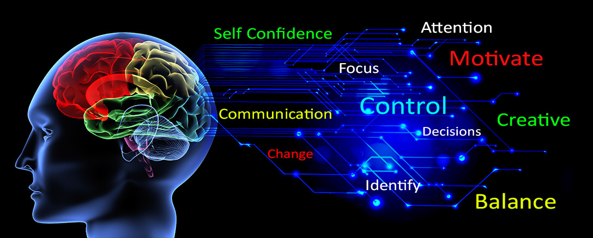

Thinking, Learning, and Progressing More Efficiently and Effectively

Apa saja tantangan utama yang sudah kamu hadapi terkait manajemen waktu?
Tantangan utama yang saya hadapi terkait managemen waktu adalah ketika memutuskan untuk keluar dari pekerjaan lama, dan mencoba Jenis pekerjaan baru. Mendapatkan pekerjaan baru, klien baru, waktu bekerja dengan zona waktu yang sangat jauh berbeda, yang pastinya saya harus bekerja malam hari disaat waktu tidur. Sampai sekarang masih terasa sangat aneh dan tidak nyaman kalau siang hari dihabiskan untuk tidur.
Bagaimana cara kamu mengatasi tantangan tersebut? Teknik apa yang ingin atau sudah kamu coba?
Saat ini cara saya mengatasi tantangan tersebut dengan membatasi intensitas kerja, jika normalnya seminggu 30 jam - 40 jam, saya usahakan untuk dibawah itu. Juga saya meminta untuk mengirimkan pekerjaan diakhir hari klien , jadi saya bisa mengerjakan dan menyelesaikan pekerjaan tepat dipagi hari mereka. Jadi untuk review pekerjaan bisa dilakukan sore hari saya.
Apa rencana atau strategi keseluruhan yang sudah kamu rancang untuk menghadapi berbagai kegiatan berikut?
Saya akan mencari klien dengan zona waktu yang tidak terlalu berbeda jauh dengan saya, atau saya mulai mencari klien lokal-walaupun agak pesimis lol. Yang harus benar-benar saya perhatikan memang waktu bekerja yang normal demi mengurangi dampak kurang baik dari bekerja diwaktu malam.
Apakah kamu sudah memiliki growth mindset? Ceritakanlah keadaan mindset kamu sekarang.
Growth mindset, beberapa tahun terakhir memang begitu terasa telah menjadi bagian keseharian saya. Saya selalu berani untuk belajar dan mencoba hal baru, bersosialisasi dengan orang dari berbagai macam latar belakang, berpartisipasi dalam kegiatan sosial. Mungkin ini berawal ketika saya mulai suka membaca buku dan berkenalan dengan NLP (Neuro Linguistik Programming), yang juga mengingatkan saya akan pesan-pesan dari orang tua saya sewaktu saya masih kecil, bagaimana berhubungan dengan keluarga dan masyarakat. Saya percaya bahwa kesuksesan itu hanyalah bonus bagi orang yang bekerja keras dengan ikhlas, proses itulah inti dari menikmati hidup.
Apakah kamu pikir atau rasakan bahwa kamu sudah memiliki cara belajar yang terbaik? Jika sudah atau belum, ceritakanlah alasanmu.
Mungkin saja saya termasuk orang yang kolot, bahwa belajar itu harus dengan guru yang tepat, karena selama belajar sendiri melalui media online ataupun membaca buku sendiri terasa agak susah untuk mencerna lebih cepat pelajaran tersebut.